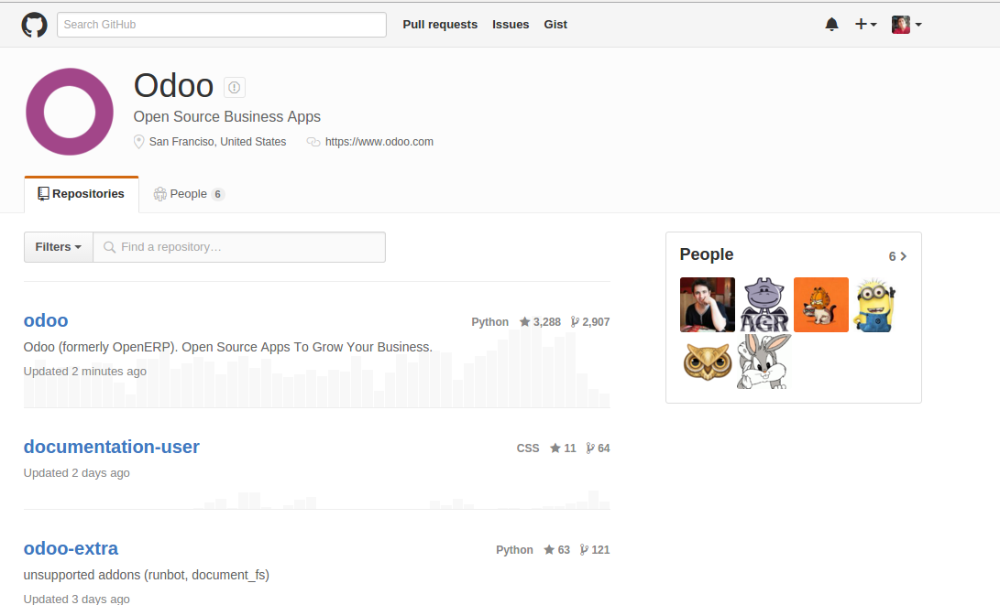
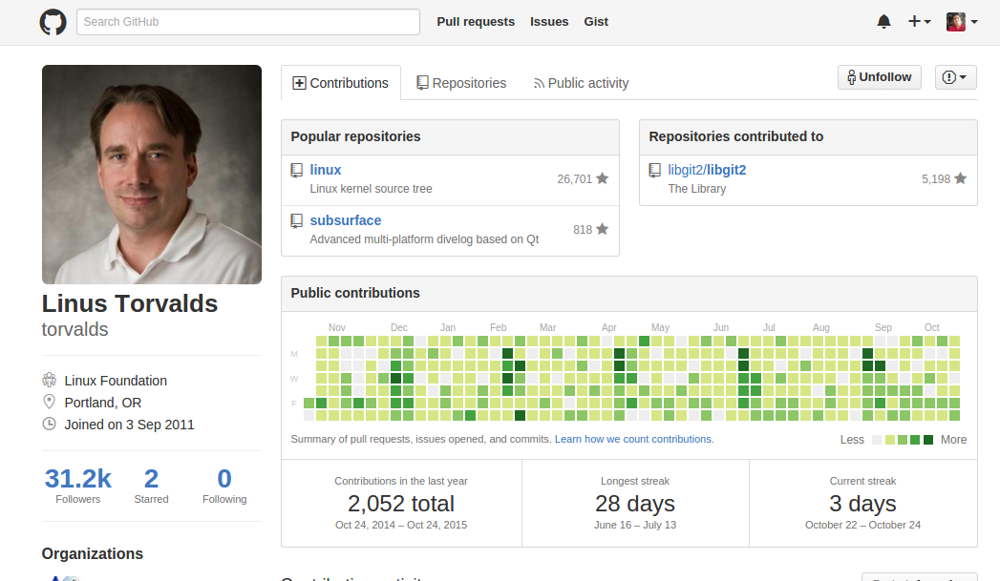
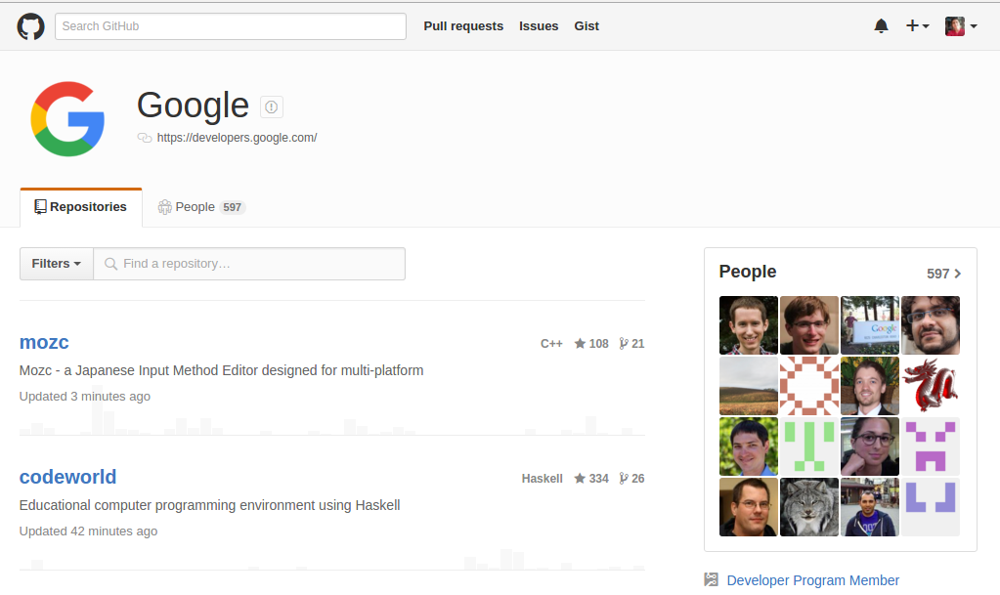

Github en Móviles
Sistemas de Información
Nadia Paucar
- Mario Sánchez
- Bryan Armijos
Primero: ¿Qué es GIT?
- Es un sistema de control de versiones pensado en la eficiencia y la confiabilidad de versiones de aplicaciones
- Desarrollado por Linus Torvals
- Permite conocer como evoluciona un Proyecto
- Permite retrocesos en el tiempo de vida de un proyecto
GITHUB
- Es una plataforma de desarrollo colaborativo para alojar proyectos utilizando el sistema de control de versiones GIT.
- Github es el Facebook para los desarrolladores el que permite encontrar la gestion de proyectos de varios desarrolladores que forman una comunidad.
Empresa Odoo
https://github.com/odoo

Linus Torvals con el Kernel de Linux
https://github.com/torvalds

Google Developers
https://github.com/google
